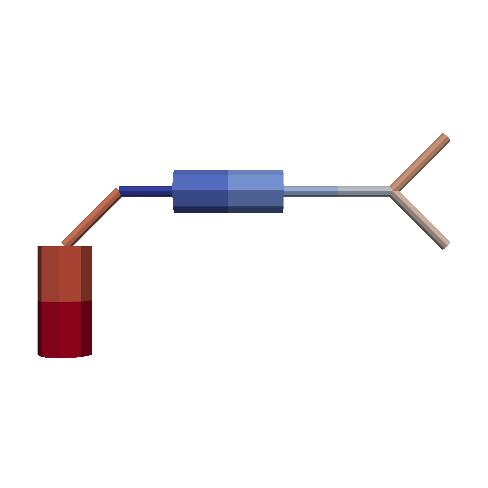
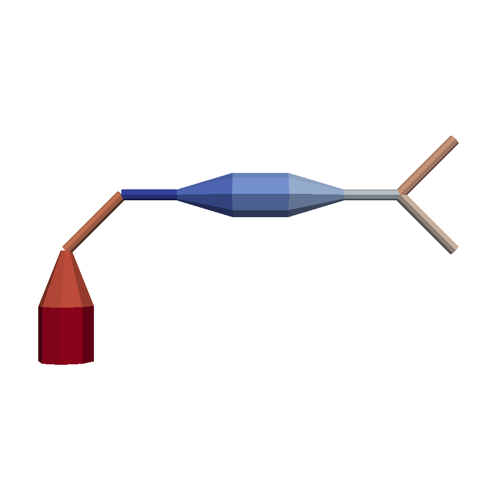

Draw Mode¶
draw_mode indicate quality of visualization of SWC compartment.
Sample Program¶
import os
import swc2vtk
filename = 'simple'
outputpos = ''
vtkgen = swc2vtk.VtkGenerator()
vtkgen.add_swc(os.path.join('swc', filename + '.swc'))
for i in range(4):
vtkgen.set_draw_mode(i)
vtkgen.write_vtk(os.path.join(outputpos, filename + '_draw'+str(i)+'.vtk'))
draw_mode = 0¶

draw_mode = 1¶

draw_mode = 2¶

draw_mode = 3 with Gourand Shading¶
draw_mode = 3 with Gourand shading by Paraview could make best quality of 3D model.